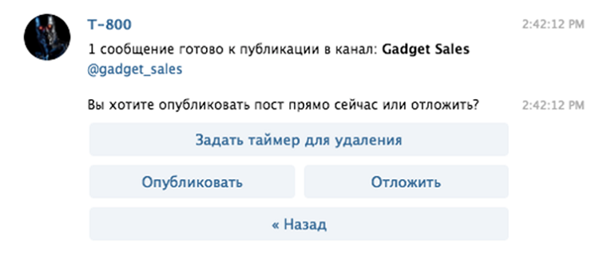

Telegram набирає обертів - щомісячна аудиторія вже перевалила за 180 мільйонів і прагне до позначки в 200М активних користувачів по всьому світу. З них 80 мільйонів чоловік щомісяця генерує по 30 мільярдів переглядів каналів різних тематик. А це означає, що прийшов час придивитися до цього месенджер і запустити свій власний канал. У цій статті ми розповімо, як це зробити.
Канали в Telegram і їх види.
Публічні канали в Telegram - це канали, які будь-який користувач може знайти через пошук і приєднатися до них. Приватний канали - канали, які не відображаються в пошуку і до них можна приєднатися тільки за посиланням. Їх може бути всього 8 (Вісім) з одного телефону. Принаймні на даний момент (листопад 2017). Публічні канали мають свій короткий адресу на кшталт https://t.me/smmlab, на відміну від Приватних каналів.
Створення Telegram каналу
Отже, перше і, мабуть, найголовніше в створенні свого Telegram каналу - визначитися з тематикою і контентом. Незважаючи на те, що вже зараз складно знайти і зайняти вільну оригінальну нішу, тим не менш, це цілком можливо.
Для початку подивіться на існуючі в Telegram канали - ймовірно, вашу ідею вже хтось успішно реалізував, і вам варто звернути увагу на щось інше, щоб не конкурувати з великими активними гравцями. Офіційного каталогу або розширеного пошуку каналів в Telegram немає, тому варто скористатися сторонніми ресурсами, наприклад: https://tlgrm.ru/channels.
Після затвердження ідеї приступимо до створення самого каналу. У web-версії цього зробити не можна, тому беремо в руки телефон і в меню вибираємо «Створити канал», після чого Telegram запропонує нам вказати назву нового каналу, завантажити фото і додати пару рядків в опис. Для прикладу зробимо канал, присвячений знижкам на гаджети.
Далі вибираємо тип каналу, чи буде він приватним або публічним. Публічні канали видно в пошуку, приєднатися до них може будь-який користувач. Приєднатися до приватного каналу можна тільки по спеціальному посиланню. На цій же сторінці нам необхідно вказати адресу каналу, в нашому випадку це буде @gadget_sales.
Вітаємо самі себе, канал створений і готовий до розміщення публікацій. Що далі?
Боти і управління каналом
Далі нам необхідно скористатися послугами бота, за допомогою якого нам належить управляти каналом. Чому так складно? Справа в тому, що на даний момент в Telegram-канал неможливо вручну відправити видання, що містить картинку, текст, кнопку і реакції одним повідомленням.
Насамперед знаходимо в пошуку ось цього джентльмена - @ControllerBot. Він допомагатиме нам в управлінні каналом. Напишіть йому повідомлення з командою /start. Він трохи розповість про себе і своїх можливостях, після чого запропонує додати до нього ваш новий канал. Для цього використовуємо команду /add.
ControllerBot ламаною російською пропонує вибрати вашого особистого бота, за допомогою якого ви будете керувати вашим каналом. Якщо у вас ще немає власного бота - не біда, Controller Bot з радістю відправить вас до свого знайомого, який абсолютно безкоштовно допоможе створити вам бота - @BotFather.
Прописуємо команду / start і знайомимося з усіма можливими функціями BotFather. На даний момент нас цікавить створення нового бота, команда / newbot.

BotFather крок за кроком буде допомагати вам створювати власного бота. Дайте йому ім'я і виберіть username. Ми назвали нашого бота типовим ім'ям для робота - T-800.
Тепер у вас є власний бот, який буде виконувати ваші команди. Круто, чи не так?
По завершенню BotFather видасть вам token до HTTP API вашого бота, він буде виглядати як довгий набір з букв і цифр.
Копіюємо його, повертаємося до ControllerBot і відправляємо token відповідним повідомленням.
Після цього слід призначити створеного бота адміністратором вашого каналу (не бійтеся, бот підпорядковується трьом законам робототехніки і не вкраде у вас канал). Заходимо в Інформацію про канал - вкладка «Адміністратори» - «Додати нового адміністратора». У пошуку прописуємо username вашого бота і призначаємо його адміністратором каналу.
Відтепер ви не самотні, у вашому каналі два передплатника - ви і ваш вірний помічник. Повертайтеся в ControllerBot, відправляйте туди username вашого каналу і вибирайте часовий пояс. Тепер все готово до розміщення публікацій.
Розміщення публікацій
Для того, щоб зробити публікацію, необхідно відкрити переписку з вашим ботом, вибрати канал, в якому потрібно зробити публікацію, якщо їх декілька, і відправити текст.
Після публікації тексту бот запропонує по черзі додати до посту фото, реакції або кнопку з посиланням. Коли ми закінчили оформляти наш пост, ми натискаємо «Далі» і публікуємо пост.
За допомогою відкладених записів можна розпланувати публікації на день, а то і на кілька днів вперед. Такі записи виходитимуть автоматично в заздалегідь заданий вами час.
Після публікації наш пост з'являється в самому каналі з усіма елементами, які ми додали.
Розкрутка каналу, залучення передплатників
Мабуть, питання залучення передплатників є найактуальнішим для власників Telegram-каналів. Існує кілька способів:
- розкажіть про ваш каналі друзям. Для початку покличте в нього своїх друзів і знайомих. Перш ніж купувати рекламу, потрібно спробувати своїми силами набрати якомога більшу кількість передплатників. Таким чином ви подолаєте «соціальну тишу», адже коли до вас на канал приходить новий користувач, він звертає увагу на кількість передплатників. Якщо він побачить тільки вас з вашим неживим іншому, ймовірність того, що він підпишеться на подібний канал, виявиться вкрай низькою.
- додайте канал в каталозі. Як ми вже згадували, офіційного каталогу Telegram-каналів немає, проте існує велика кількість неофіційних. Варто згадати, що більшість каталогів приймають до себе тільки канали, що мають в своєму арсеналі від 100 або більше передплатників.
- закупити рекламу в іншому Telegram-каналі. Найдієвіший, але вимагає фінансових вкладень спосіб. Знайдіть в каталозі інший канал, відповідний за цільовою аудиторією, спиш з адміністратором і домовтеся про ціну за публікацію реклами вашого каналу. На жаль, вже зараз є можливість накрутки «мертвих» користувачів, чим і користується велика кількість каналів. Так що в каналі з 10 000 передплатниками може виявитися всього 200-300 «живих». Будьте уважні при закупівлі реклами та обов'язково звертайте увагу на співвідношення кількості користувачів і переглядів публікацій.
- робіть взаємні рекламні публікація з іншими Telegram-каналами. Коли ви обзаведетеся достатньою кількістю передплатників, можна шукати канали з приблизно схожим кількістю активної аудиторії і пропонувати їм обмінятися рекламою. Таким способом і ви, і адміністратор іншого каналу отримуєте рекламу фактично безкоштовно. Це взаємовигідний обмін. Але вчащати з цим не варто, інакше ризикуєте втратити лояльність вашої аудиторії.
По-суті, зараз монетизувати Telegram-канал ви можете двома способами:
- продаючи рекламні пости
- за моделлю CPA
Якщо з першим варіантом все відносно зрозуміло, то формат монетизації по CPA залишає ряд питань і зрозумілий не всім. Давайте детальніше розберемо, як це відбувається.
CPA (від англ. Cost Per Action - «ціна за дію») - модель оплати інтернет-реклами, при якій рекламодавець платить веб-майстру за цільове дію користувача, якого веб-майстер навів на сайт рекламодавця. Такою дією може бути покупка товару, оплата послуги, установка додатки, реєстрація в онлайн-грі і багато іншого.
Говорячи простою мовою, ви будете отримувати відсоток або фіксовану суму від покупок користувачів, які перейшли по вашим партнерським посиланням на сайт рекламодавця. Про те, як ця схема працює, ми вже розповідали в статті «Партнерські мережі для початківців: з чого вони складаються і як на них заробити».
Перше, що вам потрібно зробити, це зареєструватися в партнерській мережі Admitad. Тут є велика кількість рекламодавців різних сегментів (travel, finance, ecommerce, games, mobile apps і ін.), Повний список можна подивитися в каталозі програм.
Зіставте тематику вашого каналу і рекламодавців, доступних в партнерській мережі. Наприклад, якщо у вас канал присвячений подорожам, то ви могли б розміщувати партнерські посилання на бронювання готелів або покупку квитків, якщо канал про моду - посилання на магазини одягу та взуття. Можливих комбінацій можна придумати сотні, якщо не тисячі - чим більше креативну подачу ви придумаєте, тим більше вдасться заробити на кожному з офферов.
На даному етапі свого розвитку Telegram ще «сируватий». У ньому немає вбудованої можливості оформлення публікацій, відкритого пошуку каналів, рекомендацій та інших інструментів, які можна зустріти в Facebook або ВКонтакте. Однак не варто забувати, що Telegram це не соцмережа з урізаними можливостями, а месенджер з розширеним функціоналом. Telegram активно розвивається і має всі підстави стати дуже привабливим майданчиком для рекламодавців. Вже зараз наші веб-майстри заробляють на своїх Telegram-каналах по моделі CPA, і з кожним місяцем вони тільки набирають обертів.